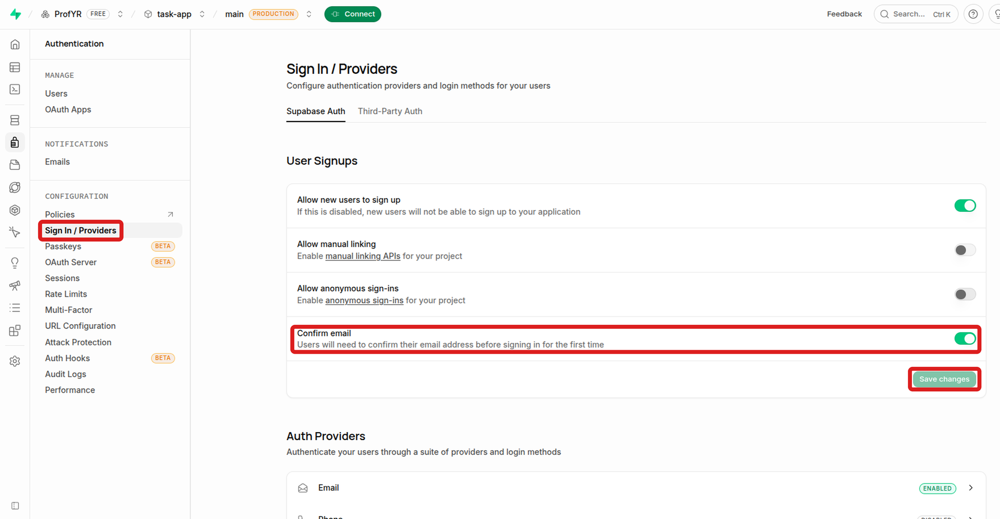

78 78. Step 5: Setup Supabase
As of Oct 22, 2026 · Official docs: Supabase · Supabase API keys
Supabase is an online service that gives you the tools you need to store and manage data for your app. It includes:
- a database (where structured data is stored)
- authentication features (to allow users to sign-in to your app)
- file storage (like a hard drive in the cloud)
- “edge functions,” which are small pieces of code that run on servers close to your users.
78.1 Remote vs. Local Supabase
Supabase can run remotely (hosted online by Supabase) and/or locally (running on your own computer). For beginners, remote Supabase is far easier. Everything happens in your browser, and nothing must be installed or configured. Local Supabase is mainly for advanced users and developers who want to test everything on their own computer before uploading to the Internet. Having a local copy of supabase also allows you to develop your app during times that you don’t have access to the Internet. Running Supabase locally needs a program named Docker (see “Deeper dive: Docker” in Step 5a: Supabase CLI command).
In this tutorial we will use remote Supabase only, so you do not need to install a local copy, or Docker, or manage anything technical on your machine.
78.2 Keep your setup worksheet open
From this step on, you collect IDs, web addresses and keys from several websites. Record them in the course’s setup worksheet (an Excel file):
Download the Task App Setup Worksheet (Excel)
- Keep it in
~/projects/full-stack-demo-app, next to yourtask-appcode folder and not inside it, so Git can never upload it to GitHub. - On its My Info sheet, fill in the yellow cells as you go. Gray cells fill themselves in: once you type your Supabase project ref, the worksheet builds your Supabase URL for you.
- Its Commands sheet builds, from your values, the exact lines you copy, for example the two lines of your
.env.localfile.
Classes 10–12: Start here explains the worksheet in more detail.
Anyone with your secret keys or your database password can use your accounts. Don’t email the worksheet, post it, or show it while sharing your screen. Account passwords (for example your Supabase login) don’t go in it; keep those in your browser’s password manager.
78.3 Sign Up for Supabase
- Go to supabase.com and sign up. Continue with GitHub is easiest.
- Supabase first asks you to create an organization. Give it any name, choose the Free plan, and create it.
- Click New project.
A project is one complete back end for one app: its own database, its own users, its own keys and its own web address. An organization holds projects, like a company holds departments: it has the billing plan and the team members who may work on its projects.
The free plan allows only a few active projects, so if you used Supabase before, you may have to pause or delete an old project first.
78.4 Project Configuration
Fill in the “Create a new project” form:
- GitHub (optional): skip it; don’t click Connect GitHub.
- Project name:
task-app. - Database password: click Generate a password and copy the password into the worksheet right away.
- Region: the area closest to you and your users, for example Americas.
- Security: leave Enable Data API and Automatically expose new tables on, and turn on Enable automatic RLS.
Click Create new project. It takes a couple of minutes.
Important: the app itself never uses the database password, but the Supabase CLI may ask for it when you link your folder to the project (Step 5a), and it needs it to create your tables later. Anyone who has it can read and change all of your data, so keep it only in the worksheet.

The region is where Supabase’s data center for your project is. Data takes time to travel, so a region close to your users makes the app faster. “Americas” lets Supabase pick a data center in the Americas.
- The Data API is a web API that Supabase creates for your database automatically. The app’s code in the browser reads and changes tables by sending web requests to your project’s address. Without it, the app couldn’t reach its data.
- Automatically expose new tables gives the Data API permission to use each new table. The app’s database setup (its migrations, see Step 9: Set Up Supabase Database) creates its tables but doesn’t grant those permissions itself; it relies on this setting. With it off, every request would fail with “permission denied”. (Supabase recommends turning it off and granting access to each table yourself; this older code wasn’t written that way.)
- Row Level Security (RLS) is a set of rules, stored in the database, about which rows each user may see or change, for example “a user sees only their own tasks”. The Data API is open to anyone who has the publishable key, and that key is inside the app’s web pages, so RLS is what keeps one user out of another user’s data. Enable automatic RLS turns RLS on for every new table, so a table someone forgets to protect is locked (it looks empty) instead of open to everyone.
78.5 Get Your API Keys
Once your project is created:
Record your project ref, URL and publishable key in the worksheet.
- The URL. Your project’s home page in the Supabase dashboard shows the project URL under the project’s name, with a Copy button. It looks like
https://qzvbnmtrewplkjhgfdsa.supabase.co. - The project ref is the part of the URL before
.supabase.co, in this exampleqzvbnmtrewplkjhgfdsa. It is your project’s unique ID. - The publishable key. Click the API Keys card under Get connected on the home page, or go to Project Settings > API Keys. The publishable key starts with
sb_publishable_. Click the copy icon next to it, because the page shows only the start of the key.
If a Preview box appears at the bottom right of the dashboard, close it with its ×.
Screenshots: the project’s home page and the API Keys pageThe project’s home page: the URL under the name, and the API Keys card under Get connected The API Keys page (the keys are hidden in this picture) - The URL. Your project’s home page in the Supabase dashboard shows the project URL under the project’s name, with a Copy button. It looks like
Open the
.env.localfile in VS Code (in thetask-appfolder). You made it in Step 3: Storing your private info (env files, etc) by copying.env.example. It starts with notes (lines that begin with#) that explain the file, and ends with the two settings the app needs:NEXT_PUBLIC_SUPABASE_URL="https://XXXX.supabase.co" NEXT_PUBLIC_SUPABASE_PUBLISHABLE_KEY="sb_publishable_XXXX"A value with
XXXXin it is a placeholder: it only shows what your value looks like.Replace the two lines. The easiest way: copy the two
.env.locallines from the worksheet’s Commands sheet and paste them over these two lines. To do it by hand instead, replace each whole value between the quotes with your own and keep the quotes: your URL in place ofhttps://XXXX.supabase.co, and your publishable key in place ofsb_publishable_XXXX. The key you copy already starts withsb_publishable_, so don’t type that part twice.Save the file. If the app is running (
npm run dev), stop it withCtrl+Cand start it again: the app reads.env.localwhen it starts.


The API Keys page shows two kinds of keys:
- The publishable key (
sb_publishable_...) is safe to put in a web page: it only allows what your database’s security rules (RLS) allow. It goes in.env.local. - The secret key (
sb_secret_...) skips all of those rules and can read and change everything, so it must never go into.env.localor into any variable whose name starts withNEXT_PUBLIC_. The app doesn’t need you to put it anywhere. (Only the optional automated tests use it, in Step 15.)
The tutorial video copies an older key, the “anon” key, from the Legacy tab. Ignore that tab and use the publishable key instead.
78.6 Two sign-in settings
Still in the Supabase dashboard, change two authentication settings (authentication, or “auth”, means checking who a user is). The dashboard has two menus on the left: a narrow column of icons (hold the mouse over it to see their names), and next to it a menu for the part you’re in. In the icon column, click Authentication, then move the mouse away from the icons: the second menu, titled Authentication, appears. Under CONFIGURATION:
- Sign In / Providers, in the User Signups section: turn off Confirm email and click Save changes.
- URL Configuration: check that Site URL is
http://localhost:3000(a new project already has it). Under Redirect URLs, click Add URL, typehttp://localhost:3000/**, and click Save URLs.
** wildcard
With Confirm email on, Supabase emails every new user a link, and the account works only after they click it. While you test with made-up accounts, those emails would never arrive, so you turn it off. A real app would turn it back on.
When someone signs in with Google (Step 6), their browser goes from your app to Google, from Google to Supabase, and then back to your app. The Site URL is the default address for that last trip. The redirect URLs are other addresses Supabase may send users back to. Only listed addresses are allowed, so that nobody can trick Supabase into sending a freshly signed-in user, with their login token, to a different website.
This app sends users back to http://localhost:3000/dashboard, which is not the Site URL, so it must be on the list. ** is a wildcard: it matches any characters, including /, so the one entry http://localhost:3000/** allows every page of the app on your computer. (A single * would stop at the next /.) When you put the app online (Step 13), you add its online address the same way.




Every new user automatically gets a Stripe customer record, so signing up in the app fails until Stripe is set up (Step 8: Set Up Stripe).
Practice Questions
Easy
Question 1 · Multiple choice
Which of the following is not one of the Supabase features listed on this page?
- A database for storing structured data
- Authentication, so users can sign in to your app
- File storage in the cloud
- Processing credit card payments
Question 2 · Short answer
What are Supabase edge functions?
Question 3 · True or false
In this tutorial, you install and run your own copy of the Supabase server on your computer.
Question 4 · Short answer
On the “Create a new project” form, what do you enter or choose for the project name, the database password and the region?
Question 5 · Short answer
What is the difference between a Supabase organization and a Supabase project?
Medium
Question 6 · Multiple choice
Most of your app’s users will be in New York. Which region should you pick for your Supabase project?
- A region on another continent, where data centers may be cheaper
- The region closest to your users, such as Americas
- Any region; the choice makes no difference
- Whichever region is listed first in the menu
Question 7 · Short answer
Give two reasons why a developer might run Supabase locally (on their own computer) instead of using only the remote version.
Question 8 · Fill in the blank
Your project URL is https://qzvbnmtrewplkjhgfdsa.supabase.co. What is your project ref? Then write the complete line in .env.local that stores the URL.
Question 9 · Short answer
The API Keys page shows a publishable key and a secret key. Which one goes into .env.local, and why must the other one never go there?
Question 10 · True or false
Even though your project is a Git repository, it is OK to type your real Supabase values into .env.local.
Question 11 · Multiple choice
Where should you keep the setup worksheet?
- Inside the
task-appfolder, so it is next to the code - In
~/projects/full-stack-demo-app, next to thetask-appfolder - In your fork on GitHub, so you can’t lose it
- In the README of your project
Question 12 · Short answer
Why do you turn off Confirm email in Supabase’s authentication settings, and should a real app keep it off?
Hard
Question 13 · Scenario
Sam starts the app, but nothing that needs Supabase works. His .env.local contains:
NEXT_PUBLIC_SUPABASE_URL="https://XXXX.supabase.co"
NEXT_PUBLIC_SUPABASE_PUBLISHABLE_KEY="sb_publishable_XXXX"What went wrong, and how does he fix it?
Question 14 · Short answer
The app never uses your database password. Why must you still save it in the worksheet, and why must you keep it secret?
Question 15 · Scenario
Maria created her project with Automatically expose new tables turned off. Later, after the app’s tables are created, every request from the app fails with “permission denied”. Explain why.
Question 16 · Long answer
The publishable key is inside the app’s web pages, where anyone can read it. Explain why Row Level Security (RLS) matters because of this, and what Enable automatic RLS adds.
Question 17 · Scenario
After signing in with Google, Supabase should send users back to http://localhost:3000/dashboard, but they never get there. Under Redirect URLs, Sam had typed only http://localhost:3000. What is wrong, and what should the entry be?
Question 18 · True or false
Two classmates clone the same task-app repository from GitHub. Because the Supabase project URL is stored in the repository, both copies of the app automatically use the same Supabase project.